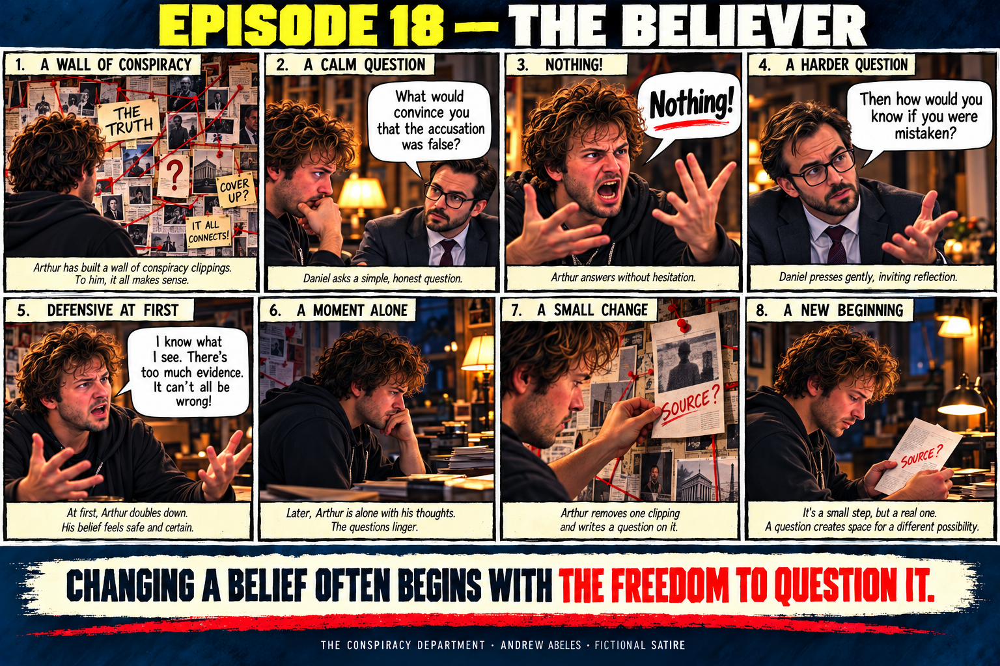
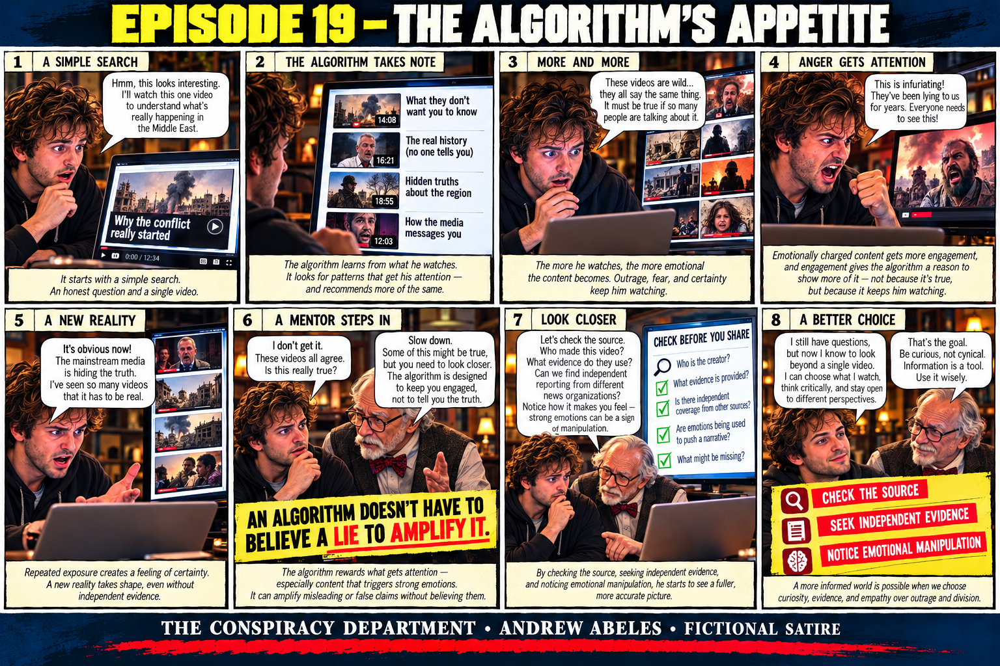
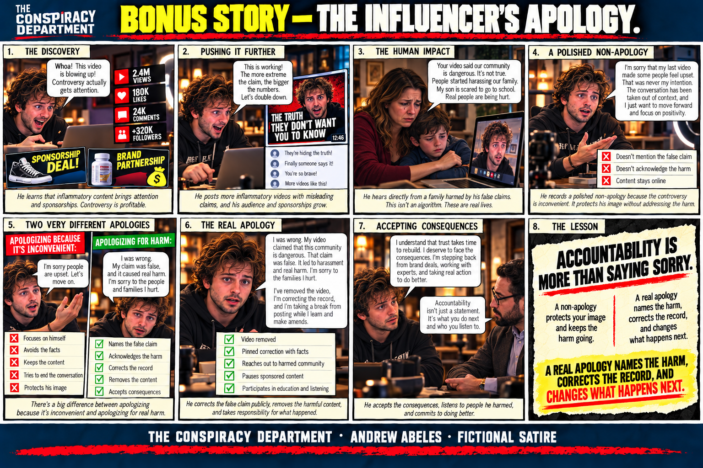
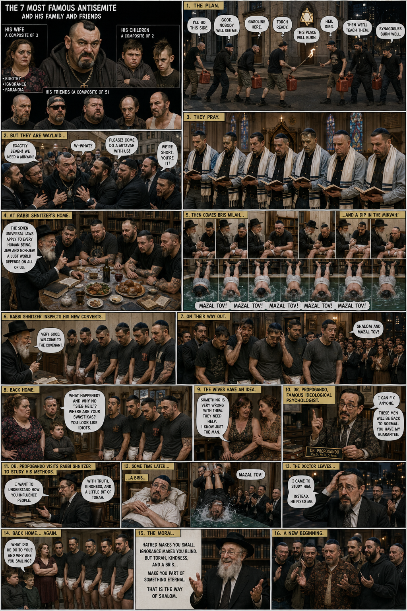
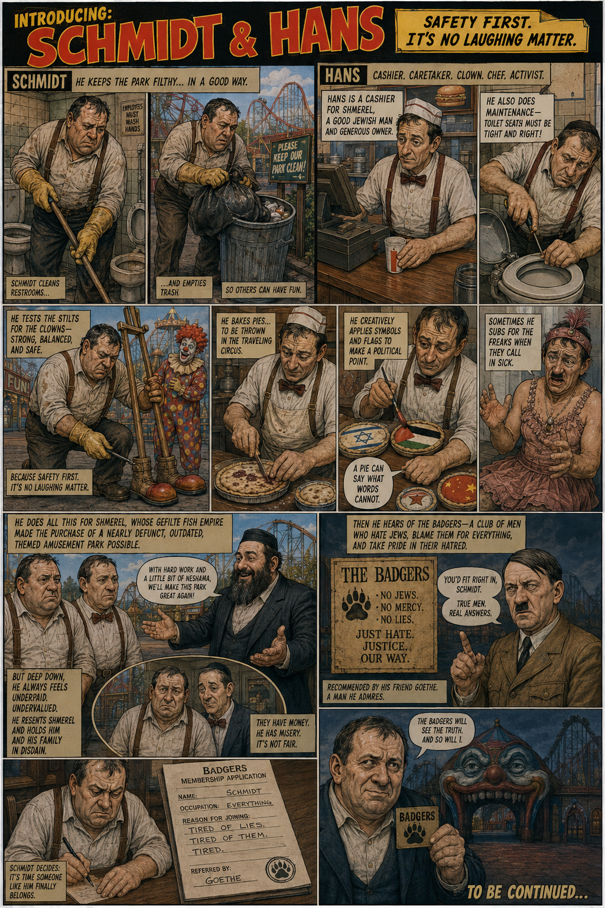
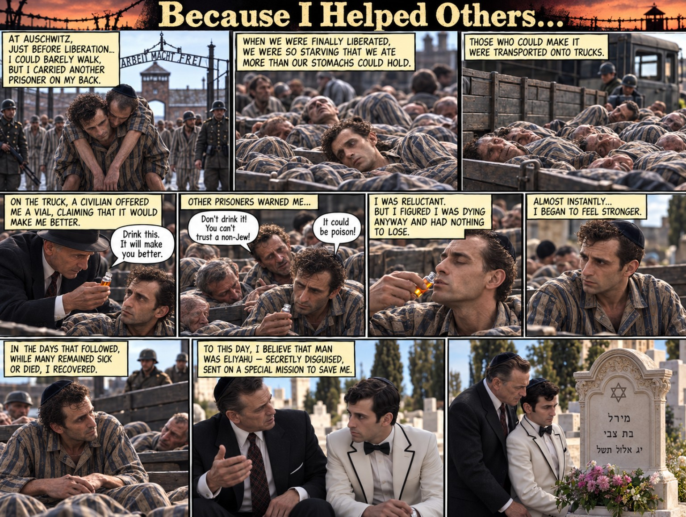

Comics confronting prejudice · Holocaust stories · satire
Anti-Semitism
and Holocaust
Hatred is learned. Storytelling can challenge it—before a slur becomes a stereotype, a stereotype becomes permission, and permission becomes harm.



Anti-Semitism and Holocaust
Comics & Holocaust stories
The Anti-Semites, Schmidt & Hans, Schmidt & Ida, Holocaust stories and educational comics by Andrew Abeles. Select a page to view the artwork full-size.



